Como publicar - PASO A PAS0
Minerva
17 Abril 2019
1.-RMD
El primer paso es crear la carpeta COTI y crear un Rmd como siempre partiendo del Template que hay en X y en la misma carpeta tendremos el logo, el curriculum, el timeline en excel,etc

2.-CARPETA WEBSITE
Una vez acabado el Rmd y comprobado que se renderiza bien en un html, crearemos una carpeta paralela llamada WEBSITE (o similar) y dentro copiaremos de la carpeta COTI y del Template de X los archivos necesarios:
_site.yml
about.Rms
Curriculum.jpeg
formato.css
formato1.css
Logo
timeline (en excel)
rmd generado para al que llamaremos “index”
3.-PROYECTO EN RSTUDIO
Abriremos index.rmd en rstudio y seguiremos los siguientes pasos:
1.- File/new project
2.- Version control
3.- GIT
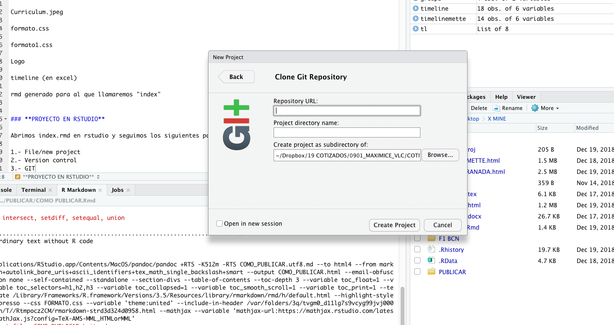
Nos pide la URL del repositorio en Github, por lo que lo dejamos en standby y vamos a crearlo (MIRAD EL PASO 4)
Una vez ya tenéis la URL de Github la Copiamos/pegamos para generar el proyecto.
 ****
****
Al generar el proyecto se crea una carpeta con su nombre

Todos los los demás archivos deberán meterse dentro de esta nueva carpeta.
4.- REPOSITORIO EN GITHUB
Nos metemos en vuestro perfil y clickamos en “start a project”
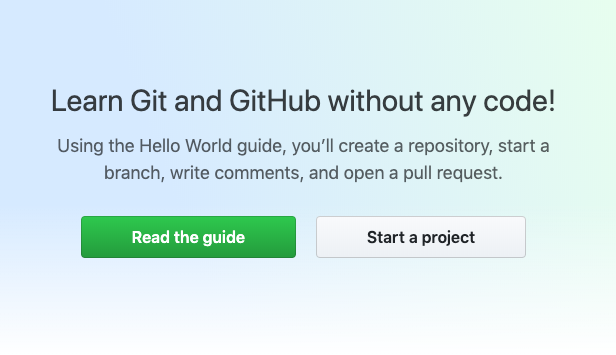
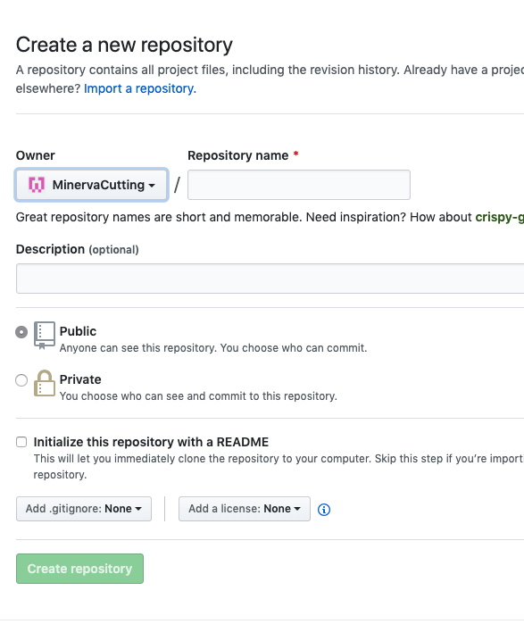
Escribimos el nombre del repositorio y click en Create repository
Y aparece una pantalla como esta:
5.- CREAR ARCHIVO _SITE
Cerramos Rstudio y volvemos a abrirlo clickando en index.rmd En la esquina superior derecha cambiamos Project de (none) a el projecto que hemos creado.
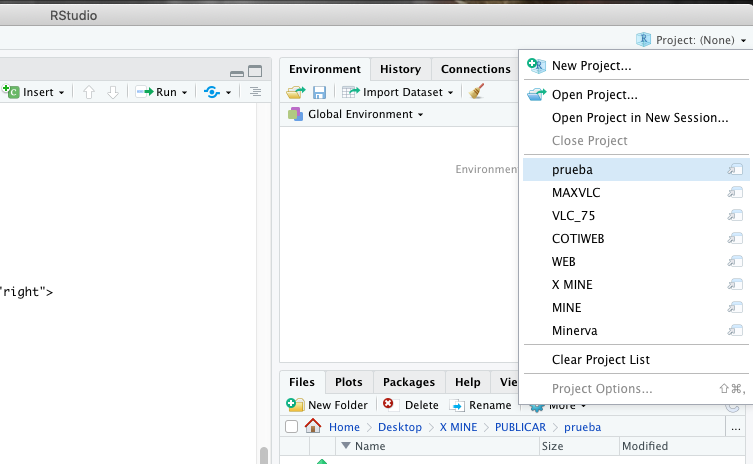
Se “reinicia” solo RStudio y aparece la pestaña Build - clickamos en Build Website y así generamos el archivo _site necesario para publicar la web.
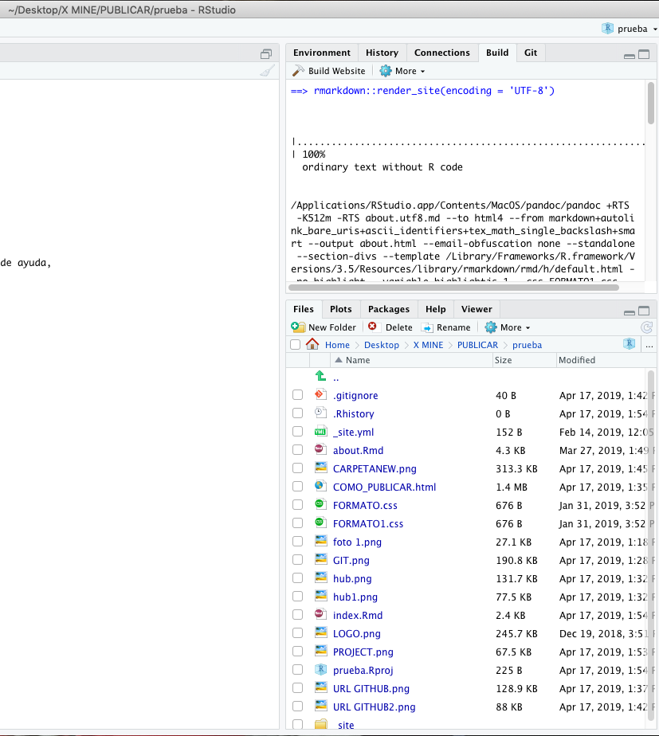
6.- SUBIR ARCHIVOS A GITHUB
Clickamos la pestaña GIT y nos aparecen todos los archivos que están dentro de la carpeta con un simbolito amarillo, los clickamos todos y el simbolito se pone azul
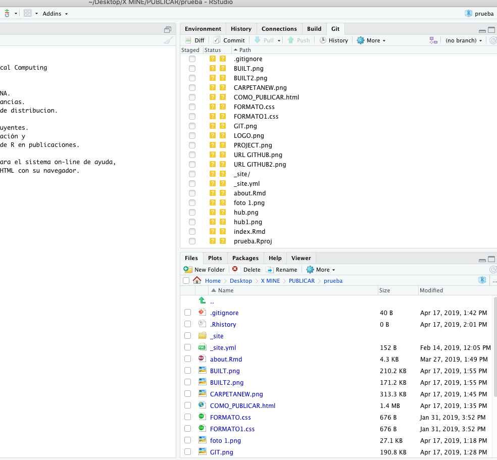
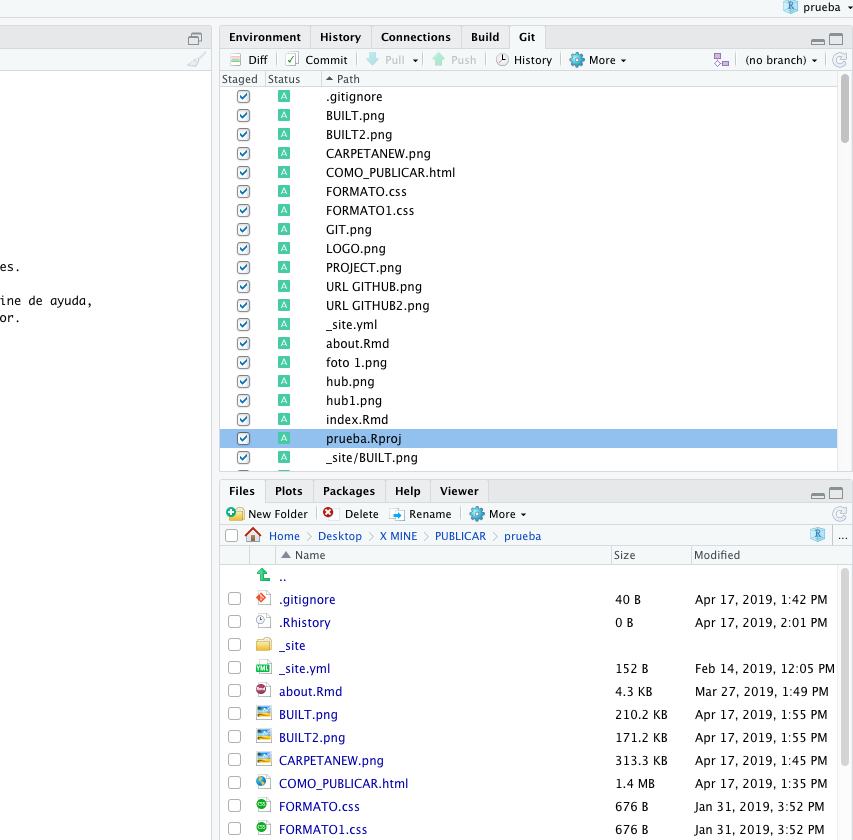
Cuando estén todos en azul, clickamos commit y se abre otra pantalla en la que deberemos escibir un mensaje y luego clickar en commit otra vez.
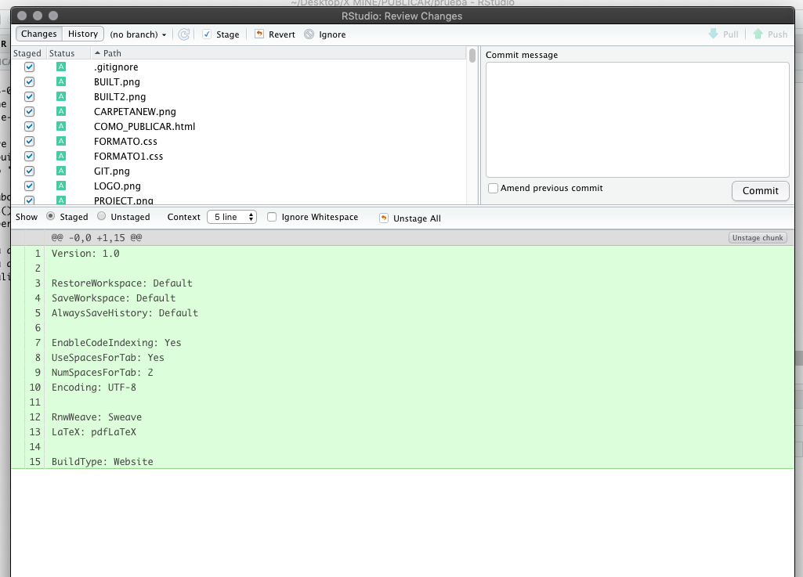
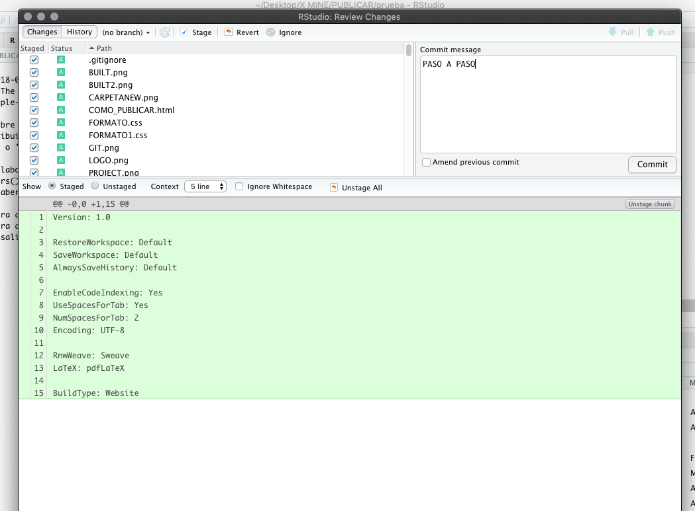
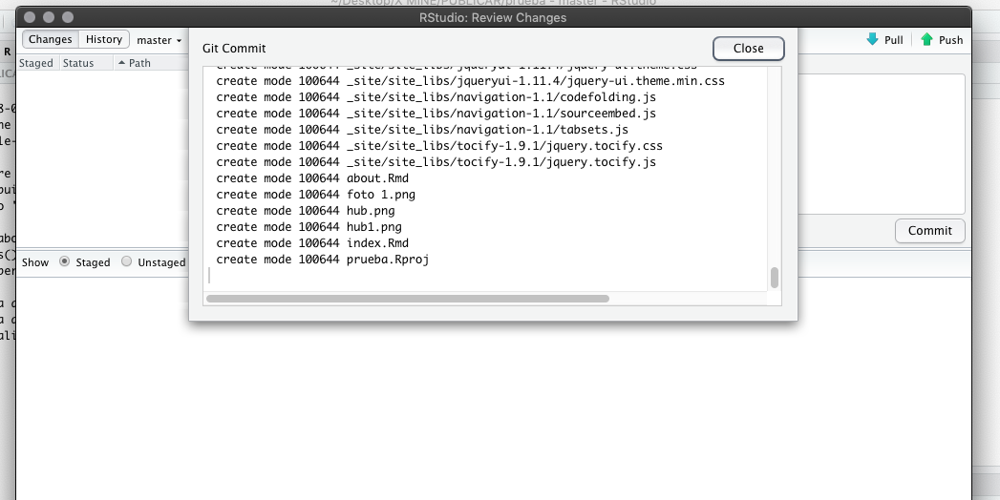
Una vez esté todo ok, cerramos y le damos a la flechita verde Push - esto hará que los archivos suban a github y si todo está correcto aparecerá el siguiente mensaje:
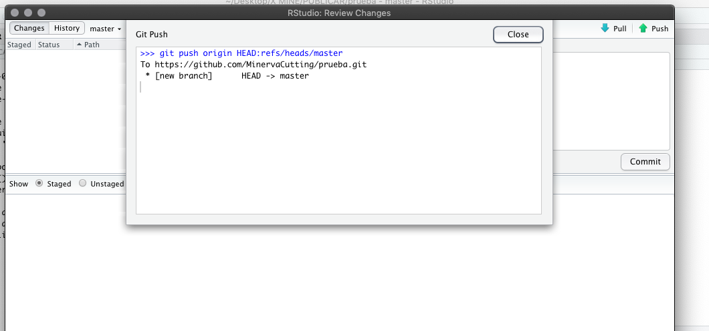
Para finalizar refrescaremos la página de GitHub y aparecerán todos los archivos que hemos subido.
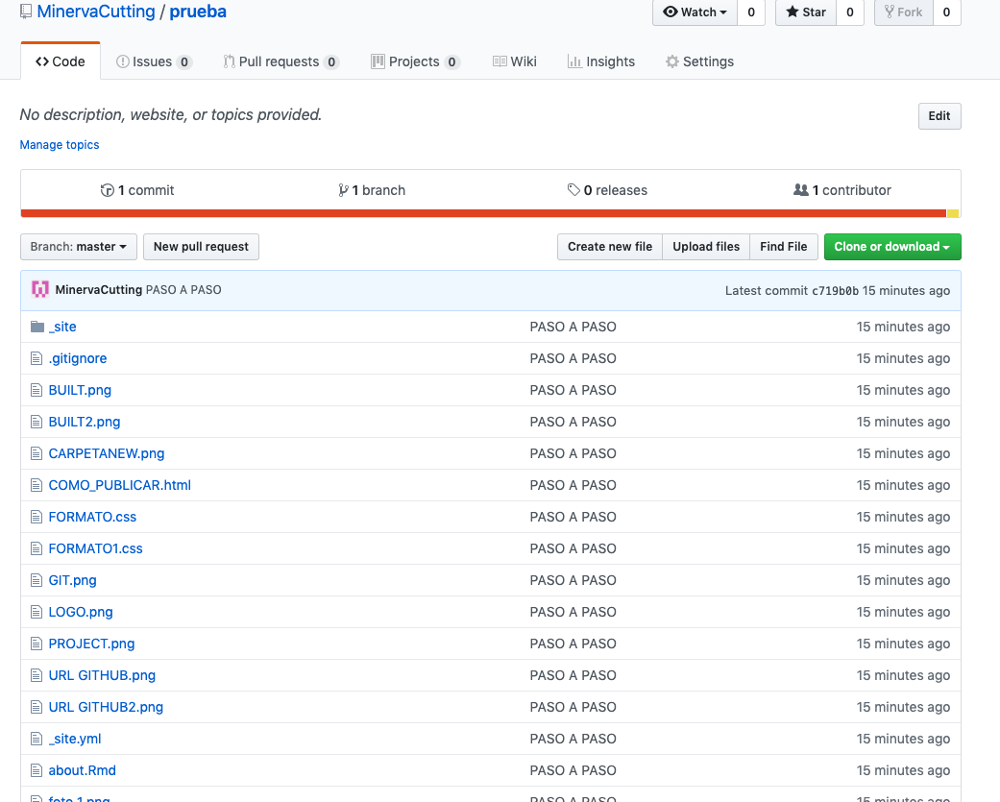
7.- PUBLICAR EN NETLIFY
Abrimos nuestra cuenta en app.netlify.com y clickamos en New site from Git
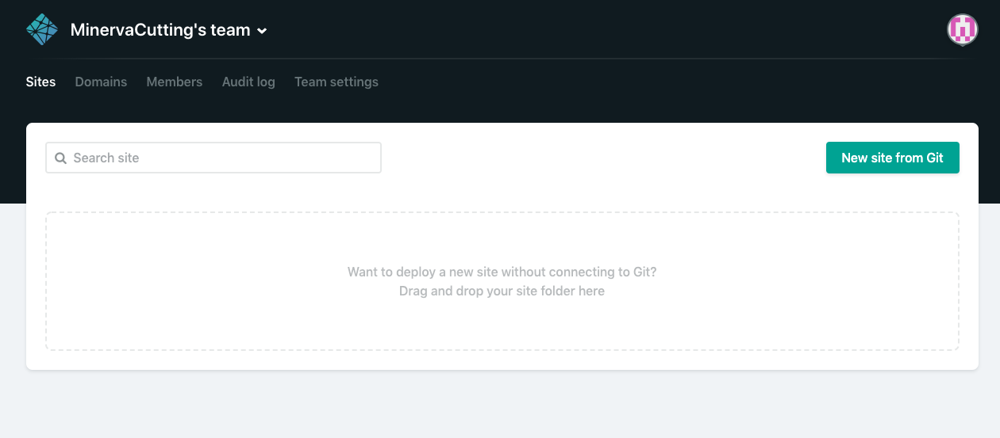
y clickamos en el botón GitHub y eso nos lleva a la siguiente pantalla donde aparecen los repositorios de Github.
Clickamos el que nos interesa para nuestra coti y nos lleva a una pantalla así:

Deberemos escribir _site en publish directory y luego deploy site
Y después de unos segundos ya nos aparece el link.
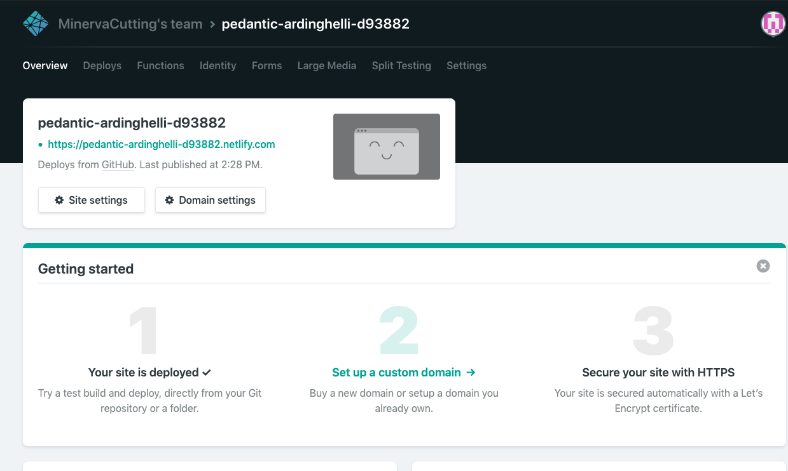
Cambiaremos el nombre del link para que no sea tan ridículo en site settings y le pondremos uno que tenga referencia a nuestra coti
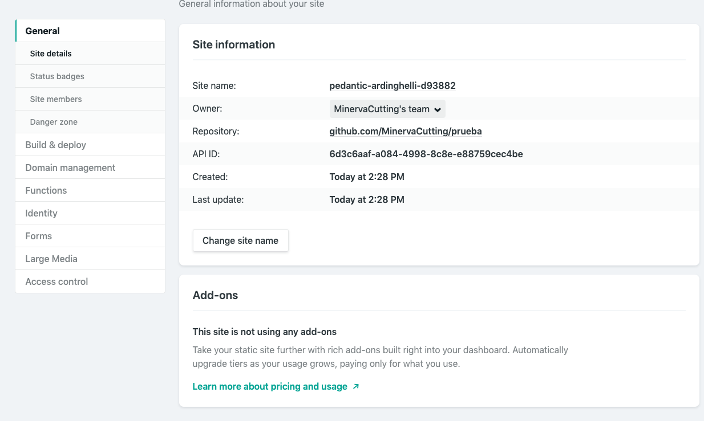
FIN!